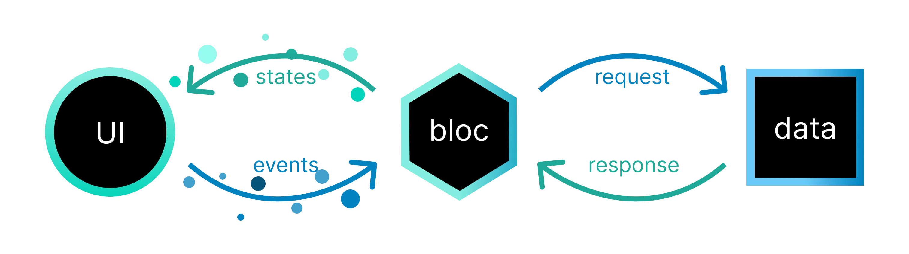

Bloc (Business Logic Component) is a popular state management solution in Flutter that helps separate business logic from the UI. It follows the principle of unidirectional data flow, making the app more predictable and easier to test.
Bloc classes.dependencies:
flutter_bloc: ^8.1.2Run flutter pub get to install the dependency.
The Bloc pattern revolves around three main components:

Let's implement a simple counter using Bloc.
abstract class CounterEvent {}
class Increment extends CounterEvent {}
class Decrement extends CounterEvent {}class CounterState {
final int value;
CounterState(this.value);
}import 'package:flutter_bloc/flutter_bloc.dart';
class CounterBloc extends Bloc<CounterEvent, CounterState> {
CounterBloc() : super(CounterState(0)) {
on<Increment>((event, emit) => emit(CounterState(state.value + 1)));
on<Decrement>((event, emit) => emit(CounterState(state.value - 1)));
}
}Explanation:
CounterBloc starts with an initial state of
0.
Increment event is added, it emits a new state
with an incremented value.
Decrement events.
To use Bloc in your widget tree, wrap your app or screen with a
BlocProvider and use BlocBuilder to rebuild
the UI based on state changes.
void main() {
runApp(
BlocProvider(
create: (context) => CounterBloc(),
child: const MyApp(),
),
);
}
class MyApp extends StatelessWidget {
const MyApp({super.key});
@override
Widget build(BuildContext context) {
return MaterialApp(
home: CounterPage(),
);
}
}
class CounterPage extends StatelessWidget {
const CounterPage({super.key});
@override
Widget build(BuildContext context) {
final counterBloc = context.read<CounterBloc>();
return Scaffold(
appBar: AppBar(title: const Text('Bloc Counter')),
body: Center(
child: BlocBuilder<CounterBloc, CounterState>(
builder: (context, state) {
return Text(
'Counter: ${state.value}',
style: const TextStyle(fontSize: 28),
);
},
),
),
floatingActionButton: Row(
mainAxisAlignment: MainAxisAlignment.end,
children: [
FloatingActionButton(
heroTag: 'inc',
onPressed: () => counterBloc.add(Increment()),
child: const Icon(Icons.add),
),
const SizedBox(width: 10),
FloatingActionButton(
heroTag: 'dec',
onPressed: () => counterBloc.add(Decrement()),
child: const Icon(Icons.remove),
),
],
),
);
}
}BlocListener is used when you want to perform an action (e.g., show snackbar) based on state changes without rebuilding the UI.
BlocListener<CounterBloc, CounterState>(
listener: (context, state) {
ScaffoldMessenger.of(context).showSnackBar(
SnackBar(content: Text('New value: ${state.value}')),
);
},
child: BlocBuilder<CounterBloc, CounterState>(
builder: (context, state) {
return Text('Counter: ${state.value}');
},
),
)
BlocConsumer combines both
BlocBuilder and BlocListener for cleaner
integration.
bloc/, model/,
view/.
BlocProvider at screen-level unless globally
needed.
flutter_bloc provides tools like
BlocBuilder, BlocListener, and
BlocProvider to integrate with Flutter easily.
With this understanding, you can now manage complex app states using the Bloc pattern in a clean and scalable way.